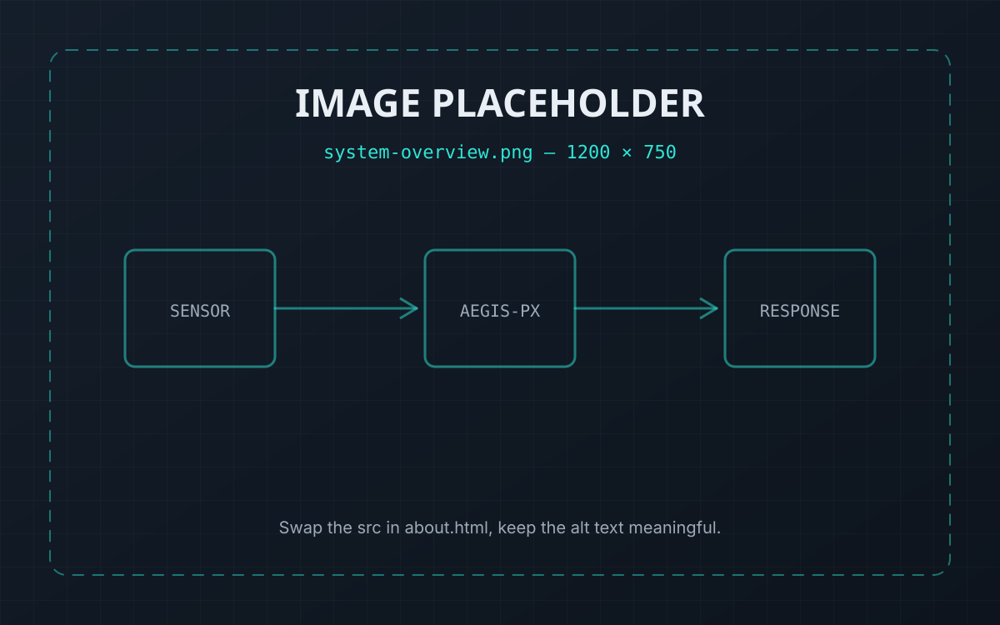
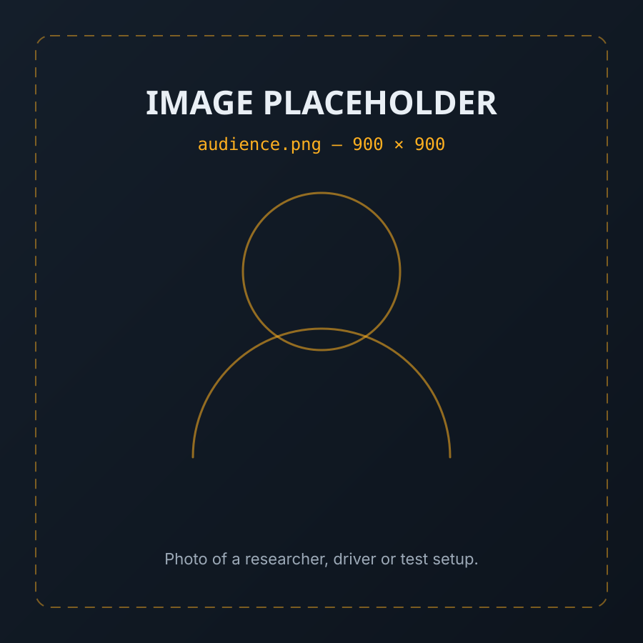

SILENT
No warning is raised
Confidence stays high, so every downstream safety check passes. The failure only becomes visible after an incident — if it ever does.
About the project
AEGIS-PX is an independent research prototype that detects silent perception failures in autonomous driving — the frames where an object detector is wrong, certain, and completely quiet about it.
Every object detector outputs a confidence score. Teams use it as a proxy for trust: high confidence means act, low confidence means doubt. That proxy breaks down the moment degraded weather makes the model wrong in a way it cannot feel.
AEGIS-PX ignores that score. Instead it taps the detector's internal layer activations while the model runs, feeds them into a small secondary classifier, and predicts the probability that this frame is actually a failure. The prediction is validated against ground truth from real dashcam footage and simulation, not against the model's own opinion of itself.
When that risk crosses a threshold, a mode-aware response layer chooses an appropriate fallback — because handing control to a human and saving yourself without one are not the same problem.

assets/images/about-system.svg.
The problem
SILENT
Confidence stays high, so every downstream safety check passes. The failure only becomes visible after an incident — if it ever does.
CONDITIONAL
Fog, glare, rain and motion blur degrade the image gradually. There is no crash, no missing frame, no obvious signal to react to.
UNOBSERVED
A model can be 99% confident and entirely wrong. Using its confidence to guard against its own errors is circular.
Audience
01
Anyone building a monitoring layer who wants a failure signal that does not come from the model policing itself.
02
People studying epistemic uncertainty, out-of-distribution detection and silent failures in perception stacks.
03
A compact, readable example of taking a real research question from dataset to demo — including its limitations.

This is a high-school independent research project. It has not been tested for real-world deployment, has no safety certification, and must not be used to make decisions about a real vehicle. The numbers shown on this site are illustrative of the prototype's behaviour, not certified performance figures. Nothing here is a substitute for a production ADAS or autonomous driving system.
Includes an interactive degradation lab.